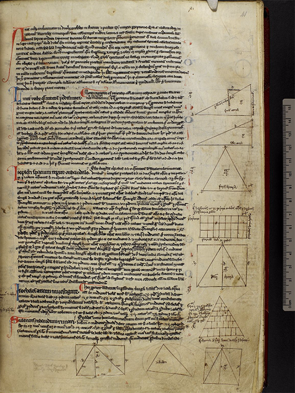
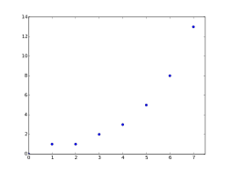
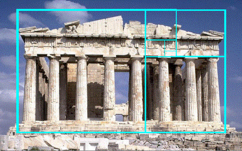

Fibonacci (Leonardo z Pizy; ur. ok 1175 r. w Pizie - zm. 1250 r.) był to włoski matematyk, znany jako Leonardo Fibonacci, Filius Bonacci z uwagi na jego ojca Bonacciego oraz Leonardo Pisano.
Historia Fibonacciego rozpoczęła się w Afryce północnej, gdzie jego ojciec Guglielmo zajmował stanowisko dyplomatyczne. Pierwsze lekcje matematyki pobierał on u arabskiego nauczyciela znajdującego się w mieście Boużia. Głównie w celu poszukiwania wiedzy Fibonacci wiele podróżował, najpierw wspólnie z ojcecm. W ramach tych podróży Fibonacci odwiedził oraz kształcił się m.in. w Egipcie, Syrii, Prowansji, Grecji oraz Sycylii, a później nawet kraje wschodnie. Dzięki tym podróżom poznawał głównie osiągnięcia tamtejszych matematyków, głównie hinduskich i arabskich takie jak np. system dziesiętny.
Po powrocie około roku 1200 do Pizy zaczął pracę nad opublikowaną przez niego w 1202 r. książką pt. Liber Abaci, w książce tej opisał system pozycyjny liczb oraz podstawy arytmetyki. Poruszył on tam takie pojęcia jak m.in.: liczby ujemne, zero, równania liniowe oraz kwadratowe.
Fragment książki matematycznej Fibonacciego pt. "Liber abaci"
W kolejnych latach Fibonacci pracował nad traktatem dotyczącym algebry oraz geometrii, pt. Practica geometriae, gdzie po raz pierwszy użyto algebry w dziedzinie geometrii.

Fragment traktatu Fibonacciego pt. "Practica geometriae"
W kolejnych latach matematyk pracował głównie nad sposobami mnożenia tak zwaną próbą dziewiątkową, przy czym przez próbę rozumiał tutaj resztę z dzielenia przez 9 sumy cyfr danej liczb, która mogła być również równa zero. Oprócz tego pracował wtedy również nad dzieleniem i rozkładem liczb na czynniki pierwsze, wprowadzając dzięki temu cechy podzielności oraz próby dzielenia przez 7 i 11.
Oprócz tego Fibonacci zajmował się nauczaniem ludzi, m.in. działań na liczbach mieszanych i ułamkach, przy czym na sprowadzanie ułamków do wspólnego mianownika miał zdecydowanie lepszy i bardziej racjonalny sposób niż arabscy matematycy, a mianowicie już wtedy znajdował najmniejszą wspólną wielokrotność mianowników. Zajmował się również przydatnymi z punktu widzenia praktycznego wówczas metodami rozwiązywania zadań arytmetyki handlowej, głównie opierającej się na proporcjach. Ważna w tej dziedzinie była tzw. figura cata, czyli opracowana przez niego reguła trzech oraz pięciu wielkości.
Twierdzenie Menelausa o czworoboku zupełnym, zwane figurą siecznych właśnie sprowadza się do owych reguł odpowiednio pięciu, siedmiu i dziewięciu wielkości. Fibonacci interesował się również w pewnym stopniu zadaniami na regułę towrzystwa, czyli podziału pewnej sumy proporcjonalnie do części uczestników podziału, itp.
Oprócz tego w dziedzinie chemii Fibonacci zajmował się również zadaniami na mieszaniny, których rozwiązania były rozdawane w formie recept. Przykładowo jedna z grup tych zadań dotyczyła również m.in. wyznaczania próby stopu, żłożonego ze znanych ilości danych stopów, tworzących razem stop określonej próby.
Fibonacci - pozostałe osiągnięcia naukowe oraz dzieła
Oprócz podanych przeze mnie wcześniej dzieł Fibonacci opublikował również Flos, w którym opublikował rozwiązania 3 problemów zleconych mu przez ówczesnego cesarza rzymskiego. Zadania te dotyczyły równania sześciennego, liczby wymiernej oraz proporcji.
Innym dziełem była z kolei tzw. Księga Kwadratów, dotycząca głównie algebry, opublikowana w 1225 roku, dedykowana cesarzowi rzymskiemu, Fryderykowi II. W owej księżce zawarł on m.in. tzw. tożsamość Fibonacciego, czyli twierdzenie mówiące, iż zbiór wszystkich sum dwóch kwadratów jest domknięty przez mnożenie, indukcyjną metodę znajdowania trójek pitagorejskich w oparciu o ciąg nieparzystych liczb całkowitych, fakt, że suma pierwszych n nieparzystych liczb całkowitych jest równa n2 oraz zawarł tam też rozwiązanie problemu congruum.
Fibonacci odkrył również ciąg liczb naturalnych określonych rekurencyjnie, który na jego cześć został nazwany Ciągiem Fibonacciego. W owym ciągu pierwszy wyraz jest równy 0, drugi 1, a każdy następny jest sumą dwóch poprzednich wyrazów. Formalnie jest to określone jako:

Wykres funkcji dla pierwszych ośmiu wyrazów ciągu Fibonacciego
Co ciekawe ciąg Fibonacciego asymptotycznie zmierza do tzw. złotej liczby, określanej jako φ, phi, jest to liczba niewymierna, co oznacza, że jego kolejne rozwinięcia dziesiętne ciągną się w nieskończoność, a jego wartości nie da się wyrazić z absolutną dokładnością. Otrzymujemy go poprzez dzielenie danego wyrazu ciągu przez wyraz poprzedni, zgodnie ze wzorem: FnFn-1Wykonując takie działanie otrzymujemy współczynnik rzędu 1,61803398875... W zależności od tego, który wyraz ciągu wybierzemy to współczynnik może być troche większy lub mniejszy.
Jednak dopiero matematyk z średniowiecza Luca Pacioli rozwinął teorię dotyczącą tego ciągu nazywając ten współczynnik boską proporcją, z uwagi na to, że bardzo często chociażby w przyrodzie długość dłuższej części jest średnią geometryczną długości krótszej części i całego odcinka i stosunek tych wielkości jest właśnie równy w przybliżeniu złotej liczbie.
Przykład boskiej proporcji w przyrodzie

Przykład boskiej proporcji w architekturze
Innym odkryciem Fibonacciego była jedna z metod analizy technicznej czerpiąca właśnie z zasady złotego podziału, zwana Poziomami Fibonacciego. Po krótce jest to po prostu zastosowanie owej zasady w ekonomii, ponieważ opiera się na założeniu, że złote proporcje pojawiają się również na wykresach cen instrumentów finansowych lub indeksów takich jak np. akcje, kontrakty terminowe, itp.